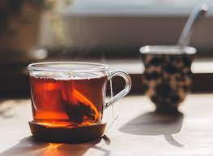

Black Tea

Black tea is a simple refreshing drink made using tea powder and water
Black Tea can be prepared using sweetner or without it too.
Ingredients:
- 2 cups of water
- 2 tsp of tea powder
- 1 tsp of sugar (optional)
Steps:
- To begin with first boil water well
- Add tea powder
- Boil for atleast 3 mins
- Wait till the color changes to darker shade
- Remove from flame, close with lid and set aside for few mins for all the flavours to steep in
- Strain
- Now add sugar. I used cane sugar
- Mix well
- Add to serving glass and serve hot!